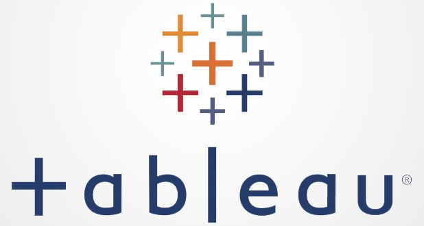
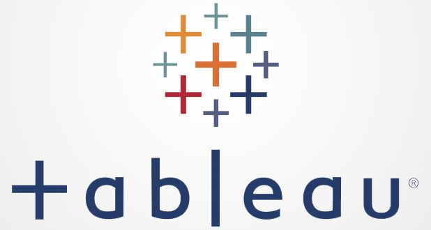
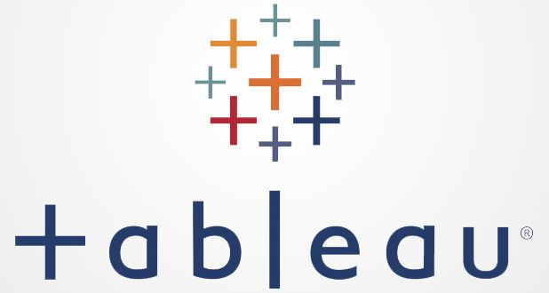

Lenguajes y Herramientas

 


Experiencia en Tableau para crear dashboards interactivos y atractivos que cuentan historias claras con datos.
Ver Mis DashboardsTransformando datos en decisiones que impulsan ventas y operaciones en retail premium con Python, SQL y Tableau.
ContáctameApasionada por el retail premium y la inteligencia de datos. Como líder en operaciones en México City, uso Python, SQL y Tableau para analizar KPIs como elasticidad de precios y comportamiento de clientes. Actualmente explorando AI para retail, con enfoque en dashboards accionables. Certificada en [tus certs, e.g., Tableau Specialist].

Experiencia en Tableau para crear dashboards interactivos y atractivos que cuentan historias claras con datos.
Ver Mis DashboardsAquí algunos de mis 14 proyectos recientes; haz clic en la imagen para verlos:
Simulación de análisis predictivo sobre ventas históricas de videojuegos en la tienda online Ice. Se identificaron patrones de éxito comercial, impacto de reseñas, y tendencias por región. Incluye pruebas de hipótesis y recomendaciones para campañas de marketing en 2017.
Estudio de patrones de viajes en taxi en Chicago durante noviembre de 2017. Se identificaron barrios más visitados, rendimiento de compañías de transporte y se realizó una prueba de hipótesis sobre el impacto del clima en la duración de trayectos. Herramientas: Python, pandas, seaborn, SciPy.
Exploración del comportamiento de usuarios en una app de alimentos. Se identificaron puntos críticos en el embudo de conversión y se evaluó el impacto de un rediseño tipográfico mediante un experimento A/A/B. El análisis reveló que el cambio visual no generó diferencias significativas. Herramientas: Python, pandas, matplotlib, scipy.

Análisis de más de dos años de datos en la plataforma Showz para identificar los canales de adquisición más rentables. Se calcularon métricas clave (LTV, CAC, ROMI), se aplicó segmentación por dispositivo y se recomendó una redistribución eficiente del presupuesto de marketing. Herramientas: cohortes, mapas de calor, pruebas A/B.

Proyecto enfocado en detectar abandono silencioso de clientes en la industria fitness. Se construyó un modelo predictivo de churn, se segmentaron perfiles mediante clustering y se formularon estrategias personalizadas para mejorar la retención. Herramientas: Python, scikit-learn, K-Means, Random Forest.